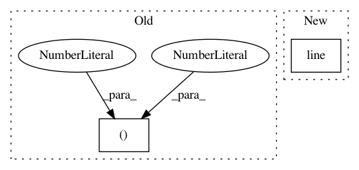

aac7b54c8d6957786a9aa70e896cef10fe0ab9fe,doc/examples/tracking_pft.py,,,#,39
Before Change
renderer.clear()
renderer.add(actor.line(streamlines, cmap.line_colors(streamlines)))
window.record(renderer, out_path="pft_streamlines.png", size=(600, 600))
.. figure:: pft_streamlines.png
After Change
if have_fury:
r = window.Renderer()
r.add(actor.line(streamlines, colormap.line_colors(streamlines)))
window.record(r, out_path="tractogram_pft.png",
size=(800, 800))
if interactive:
In pattern: SUPERPATTERN
Frequency: 3
Non-data size: 2
Instances
Project Name: nipy/dipy
Commit Name: aac7b54c8d6957786a9aa70e896cef10fe0ab9fe
Time: 2019-07-21
Author: girard.gabriel@gmail.com
File Name: doc/examples/tracking_pft.py
Class Name:
Method Name:
Project Name: bokeh/bokeh
Commit Name: 6dd4409f847d8f2e1bf420ede58f543d42245489
Time: 2016-08-01
Author: canavandl@gmail.com
File Name: examples/models/external_resources.py
Class Name:
Method Name:
Project Name: nipy/dipy
Commit Name: c2cfaf314a381e520883eba2d965cd93fd5572e0
Time: 2019-07-21
Author: girard.gabriel@gmail.com
File Name: doc/examples/tracking_bootstrap_peaks.py
Class Name:
Method Name: